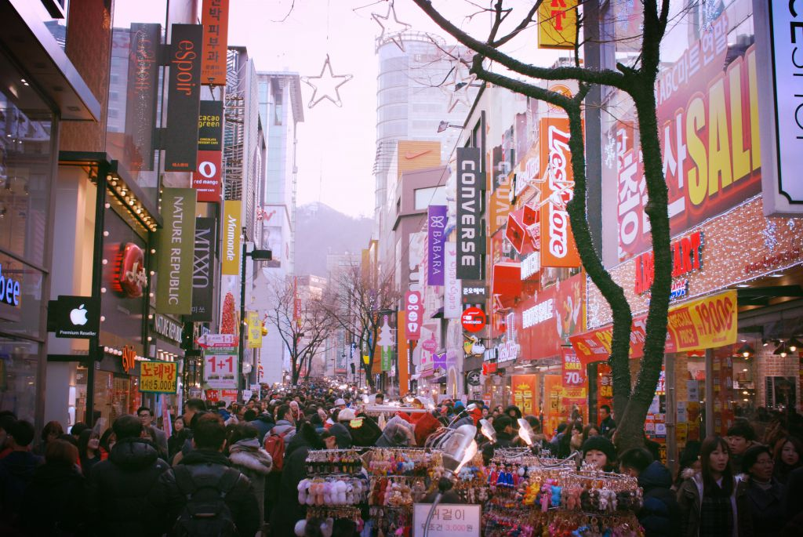

My journey in Korea
South Korea had always been one of those destinations that fascinated me — a place where neon-lit cities pulse with energy while tranquil temples rest in the shadows of misty mountains. When I finally touched down in Seoul, I felt an instant thrill, as if I had stepped into a perfect harmony between tradition and innovation. I wasn’t just there to see; I was there to feel — to taste the street food, hear the rhythm of K-pop blending with temple bells, and walk through centuries of living history. My adventure began in Seoul, a city that never truly sleeps but still manages to breathe calm into its chaos. I stayed near Insadong, a district filled with teahouses, calligraphy shops, and winding alleys that smelled of roasted chestnuts and sweet hotteok pancakes. A short walk brought me to Gyeongbokgung Palace, where guards in bright hanbok stood proudly under wooden gates painted in deep reds and greens. The palace grounds felt timeless — every step echoing through courtyards once walked by kings and queens. Later, I climbed up to Namsan Seoul Tower and watched the city lights spread endlessly in every direction, a sea of gold and blue beneath the stars. Of course, I couldn’t resist exploring Myeongdong, where the scent of spicy tteokbokki and sizzling street food filled the air. Skincare shops, neon signs, and music from open stores made it feel like walking through a living movie. For a quieter moment, I visited Bukchon Hanok Village, where traditional wooden houses stood peacefully amid the modern skyline — a reminder that Seoul’s heart beats to both ancient and modern rhythms at once.
From the capital, I took the KTX bullet train to Busan, a city where mountains meet the sea. The first thing I did was visit Haeundae Beach, where the waves shimmered under the morning sun and locals strolled with coffee in hand. Not far away stood the Haedong Yonggungsa Temple, perched dramatically on a rocky cliff overlooking the ocean. The sound of waves against the rocks mixed with the chanting of monks, creating one of the most peaceful moments of my trip. Later that evening, I explored Gwangalli Beach, its famous bridge glowing across the water while the smell of grilled seafood filled the night air. Next, I headed south to Jeju Island, Korea’s natural gem. The island felt like another world — waterfalls, lava tubes, and endless fields of green stretching into the horizon. I hiked Hallasan, South Korea’s highest mountain, surrounded by blooming wildflowers and clouds that felt close enough to touch. In Seongsan Ilchulbong, I woke before dawn to watch the sunrise paint the sea in orange and pink, a view so stunning that even the wind seemed to pause. During the afternoons, I wandered along black volcanic beaches, watched haenyeo (the famous women divers) surface with baskets of fresh seafood, and tasted the sweetest tangerines I’ve ever had. Before returning home, I spent a few quiet days in Gyeongju, often called “the museum without walls.” Ancient tombs, pagodas, and temples dotted the landscape. The Bulguksa Temple, with its soft wooden beams and golden Buddha statues, radiated a sense of stillness that words can barely capture. As I stood beneath the temple eaves watching cherry blossom petals drift in the wind, I realized that every corner of Korea tells a story — not just through its history, but through its people, its food, its music, and its gentle way of blending past and present. As my journey came to an end, I looked out the airplane window and saw the glow of Seoul fading below me. I thought about the contrast of it all — the high-speed trains and quiet temples, the skyscrapers and hanoks, the street food and mountain tea. Korea had shown me that beauty isn’t found in perfection, but in balance. It’s a country that moves fast yet honors its roots, that sings loudly but listens deeply. I left with a heart full of gratitude, a camera full of memories, and a quiet promise that I would return someday — because in Korea, every moment feels like both a beginning and a homecoming.